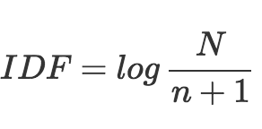
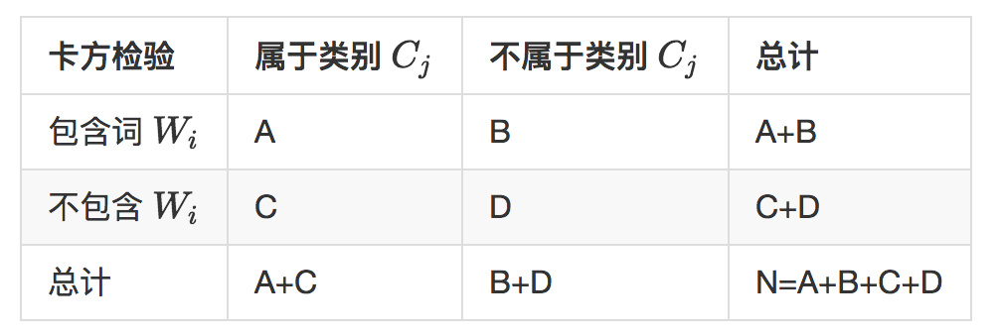
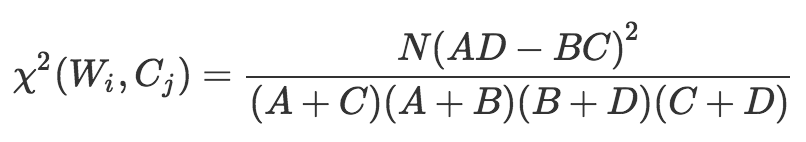

- 00 开篇词 用知识去对抗技术不平等.md.html
- 01 你真的需要个性化推荐系统吗_.md.html
- 02 个性化推荐系统有哪些绕不开的经典问题？.md.html
- 03 这些你必须应该具备的思维模式.md.html
- 04 画鬼容易画人难：用户画像的“能”和“不能”.md.html
- 05 从文本到用户画像有多远.md.html
- 06 超越标签的内容推荐系统.md.html
- 07 人以群分，你是什么人就看到什么世界.md.html
- 08 解密“看了又看”和“买了又买”.md.html
- 09 协同过滤中的相似度计算方法有哪些.md.html
- 10 那些在Netflix Prize中大放异彩的推荐算法.md.html
- 11 Facebook是怎么为十亿人互相推荐好友的.md.html
- 12 如果关注排序效果，那么这个模型可以帮到你.md.html
- 13 经典模型融合办法：线性模型和树模型的组合拳.md.html
- 14 一网打尽协同过滤、矩阵分解和线性模型.md.html
- 15 深度和宽度兼具的融合模型 Wide and Deep.md.html
- 16 简单却有效的Bandit算法.md.html
- 17 结合上下文信息的Bandit算法.md.html
- 18 如何将Bandit算法与协同过滤结合使用.md.html
- 19 深度学习在推荐系统中的应用有哪些_.md.html
- 20 用RNN构建个性化音乐播单.md.html
- 21 构建一个科学的排行榜体系.md.html
- 22 实用的加权采样算法.md.html
- 23 推荐候选池的去重策略.md.html
- 24 典型的信息流架构是什么样的.md.html
- 25 Netflix个性化推荐架构.md.html
- 26 总览推荐架构和搜索、广告的关系.md.html
- 27 巧妇难为无米之炊：数据采集关键要素.md.html
- 28 让你的推荐系统反应更快：实时推荐.md.html
- 29 让数据驱动落地，你需要一个实验平台.md.html
- 30 推荐系统服务化、存储选型及API设计.md.html
- 31 推荐系统的测试方法及常用指标介绍.md.html
- 32 道高一尺魔高一丈：推荐系统的攻防.md.html
- 33 和推荐系统有关的开源工具及框架介绍.md.html
- 34 推荐系统在互联网产品商业链条中的地位.md.html
- 35 说说信息流的前世今生.md.html
- 36 组建推荐团队及工程师的学习路径.md.html
- 加餐 推荐系统的参考阅读.md.html
- 结束语 遇“荐”之后，江湖再见.md.html
- 捐赠
05 从文本到用户画像有多远
前面，我和你聊过了不要把用户画像当成银弹，也不要觉得一无是处。对于一个早期的推荐系统来说，基于内容推荐离不开为用户构建一个初级的画像，这种初级的画像一般叫做用户画像（User Profile），一些大厂内部还习惯叫做UP，今天我就来讲一讲从大量文本数据中挖掘用户画像常常用到的一些算法。
从文本开始
用户这一端比如说有：
- 注册资料中的姓名、个人签名；
- 发表的评论、动态、日记等；
- 聊天记录（不要慌，我举个例子而已，你在微信上说的话还是安全的）。
物品这一端也有大量文本信息，可以用于构建物品画像（ Item Profile ），并最终帮助丰富 用户画像（User Profile），这些数据举例来说有：
- 物品的标题、描述；
- 物品本身的内容（一般指新闻资讯类）；
- 物品的其他基本属性的文本。
文本数据是互联网产品中最常见的信息表达形式，数量多、处理快、存储小，因为文本数据的特殊地位，所以今天我专门介绍一些建立用户画像过程中用到的文本挖掘算法。
构建用户画像
要用物品和用户的文本信息构建出一个基础版本的用户画像，大致需要做这些事：
1. 把所有非结构化的文本结构化，去粗取精，保留关键信息；-
- 2. 根据用户行为数据把物品的结构化结果传递给用户，与用户自己的结构化信息合并。
第一步最关键也最基础，其准确性、粒度、覆盖面都决定了用户画像的质量。仿佛如果真的要绘制一个用户的模样，要提前给他拍照，这个拍照技术决定了后面的描绘情况，无论是采用素描、油画、工笔还是写意。这一步要用到很多文本挖掘算法，稍后会详细介绍。
第二步会把物品的文本分析结果，按照用户历史行为把物品画像（ Item Profile ）传递给用户。你也许会问：传递是什么意思？没关系，这个稍后我会介绍。
一、结构化文本
我们拿到的文本，常常是自然语言描述的，用行话说，就是“非结构化”的，但是计算机在处理时，只能使用结构化的数据索引，检索，然后向量化后再计算；所以分析文本，就是为了将非结构化的数据结构化，好比是将模拟信号数字化一样，只有这样才能送入计算机，继续计算。这个很好理解，不多解释。
从物品端的文本信息，我们可以利用成熟的NLP算法分析得到的信息有下面几种。
- 关键词提取：最基础的标签来源，也为其他文本分析提供基础数据，常用TF-IDF和TextRank。
- 实体识别：人物、位置和地点、著作、影视剧、历史事件和热点事件等，常用基于词典的方法结合CRF模型。
- 内容分类：将文本按照分类体系分类，用分类来表达较粗粒度的结构化信息。
- 文本 ：在无人制定分类体系的前提下，无监督地将文本划分成多个类簇也很常见，别看不是标签，类簇编号也是用户画像的常见构成。
- 主题模型：从大量已有文本中学习主题向量，然后再预测新的文本在各个主题上的概率分布情况，也很实用，其实这也是一种聚类思想，主题向量也不是标签形式，也是用户画像的常用构成。
- 嵌入：“嵌入”也叫作Embedding，从词到篇章，无不可以学习这种嵌入表达。嵌入表达是为了挖掘出字面意思之下的语义信息，并且用有限的维度表达出来。
下面我来介绍几种常用的文本结构化算法。
1 TF-IDF
TF全称就是Term Frequency，是词频的意思，IDF就是 Inverse Document Frequency 是逆文档频率的意思。TF-IDF提取关键词的思想来自信息检索领域，其实思想很朴素，包括了两点：在一篇文字中反复出现的词会更重要，在所有文本中都出现的词更不重要。非常符合我们的直觉，这两点就分别量化成TF和IDF两个指标：
- TF，就是词频，在要提取关键词的文本中出现的次数；
- IDF，是提前统计好的，在已有的所有文本中，统计每一个词出现在了多少文本中，记为n，也就是文档频率，一共有多少文本，记为N。
IDF就是这样计算：- - 计算过程为：词出现的文档数加1，再除总文档数，最后结果再取对数。
IDF的计算公式有这么几个特点：
- 所有词的N都是一样的，因此出现文本数越少(n)的词，它的IDF值越大；
- 如果一个词的文档频率为0，为防止计算出无穷大的IDF，所以分母中有一个1；
- 对于新词，本身应该n是0，但也可以默认赋值为所有词的平均文档频率。
计算出TF和IDF后，将两个值相乘，就得到每一个词的权重。根据该权重筛选关键词的方式有：
- 给定一个K，取Top K个词，这样做简单直接，但也有一点，如果总共得到的词个数少于K，那么所有词都是关键词了，显然这样做不合理；
- 计算所有词权重的平均值，取在权重在平均值之上的词作为关键词；
另外，在某些场景下，还会加入以下其他的过滤措施，如：只提取动词和名词作为关键词。
2 TextRank
TextRank这个名字看上去是不是和著名的PageRank有点亲戚关系？是的，TextRank是PageRank的私生子之一，著名的PageRank算法是Google用来衡量网页重要性的算法，TextRank算法的思想也与之类似，可以概括为：
- 文本中，设定一个窗口宽度，比如K个词，统计窗口内的词和词的共现关系，将其看成无向图。图就是网络，由存在连接关系的节点构成，所谓无向图，就是节点之间的连接关系不考虑从谁出发，有关系就对了；
- 所有词初始化的重要性都是1；
- 每个节点把自己的权重平均分配给“和自己有连接“的其他节点；
- 每个节点将所有其他节点分给自己的权重求和，作为自己的新权重；
- 如此反复迭代第3、4两步，直到所有的节点权重收敛为止。
通过TextRank计算后的词语权重，呈现出这样的特点：那些有共现关系的会互相支持对方成为关键词。
3 内容分类
在门户网站时代，每个门户网站都有自己的频道体系，这个频道体系就是一个非常大的内容分类体系，这一做法也延伸到了移动互联网UGC时代，图文信息流 App 的资讯内容也需要被自动分类到不同的频道中，从而能够得到最粗粒度的结构化信息，也被很多推荐系统用来在用户冷启动时探索用户兴趣。
在门户时代的内容分类，相对来说更容易，因为那时候的内容都是长文本，长文本的内容分类可以提取很多信息，而如今 UGC 当道的时代，短文本的内容分类则更困难一些。短文本分类方面经典的算法是 SVM ，在工具上现在最常用的是Facebook开源的FastText。
4 实体识别
命名实体识别（也常常被简称为NER，Named-Entity Recognition）在NLP技术中常常被认为是序列标注问题，和分词、词性标注属于同一类问题。
所谓序列标注问题，就是给你一个字符序列，从左往右遍历每个字符，一边遍历一边对每一个字符分类，分类的体系因序列标注问题不同而不同：
- 分词问题：对每一个字符分类为“词开始”“词中间”“词结束”三类之一；
- 词性标注：对每一个分好的词，分类为定义的词性集合的之一；
- 实体识别：对每一个分好的词，识别为定义的命名实体集合之一。
对于序列标注问题，通常的算法就是隐马尔科夫模型（HMM）或者条件随机场（CRF），我们在推荐系统中主要是挖掘出想要的结构化结果，对其中原理有兴趣再去深入了解。
实体识别还有比较实用化的非模型做法：词典法。提前准备好各种实体的词典，使用trie-tree数据结构存储，拿着分好的词去词典里找，找到了某个词就认为是提前定义好的实体了。
以实体识别为代表的序列标注问题上，工业级别的工具上spaCy比NLTK在效率上优秀一些。
5 聚类
传统聚类方法在文本中的应用，今天逐渐被主题模型取代，同样是无监督模型，以LDA为代表的主题模型能够更准确地抓住主题，并且能够得到软聚类的效果，也就是说可以让一条文本属于多个类簇。
作为初创公司或初创产品，我知道你的时间宝贵，也知道你的公司处处节俭，以至于没有业务专家为你的应用制定分类体系，这时候如果能在文本数据上跑一个LDA模型，那世界就显得非常美好了。
LDA模型需要设定主题个数，如果你有时间，那么这个K可以通过一些实验来对比挑选，方法是：每次计算K个主题两两之间的平均相似度，选择一个较低的K值；如果你赶时间，在推荐系统领域，只要计算资源够用，主题数可以尽量多一些。
另外，需要注意的是，得到文本在各个主题上的分布，可以保留概率最大的前几个主题作为文本的主题。LDA工程上较难的是并行化，如果文本数量没到海量程度，提高单机配置也是可以的，开源的LDA训练工具有Gensim，PLDA等可供选择。
6 词嵌入
关于嵌入，是一个数学概念。以词嵌入为例来说吧。
词嵌入，也叫作Word Embedding。前面讲到的结构化方案，除了LDA，其他都是得到一些标签，而这些标签无一例外都是稀疏的，而词嵌入则能够为每一个词学习得到一个稠密的向量。
这样说可能很抽象，换个说法，一个词可能隐藏很多语义信息，比如北京，可能包含“首都、中国、北方、直辖市、大城市”等等，这些语义在所有文本上是有限的，比如128个，于是每个词就用一个128维的向量表达，向量中各个维度上的值大小代表了词包含各个语义的多少。
拿着这些向量可以做以下的事情：
- 计算词和词之间的相似度，扩充结构化标签；
- 累加得到一个文本的稠密向量；
- 用于聚类，会得到比使用词向量聚类更好的语义聚类效果。
这方面当然就属大名鼎鼎的Word2Vec了。Word2Vec是用浅层神经网络学习得到每个词的向量表达，Word2Vec最大的贡献在于一些工程技巧上的优化，使得百万词的规模在单机上可以几分钟轻松跑出来，得到这些词向量后可以聚类或者进一步合成句子向量再使用。
二、标签选择
前面说到，用户端的文本，物品端的文本如何结构化，得到了诸如标签（关键词、分类等）、主题、词嵌入向量。接下来就是第二步：如何把物品的结构化信息给用户呢？
我们想一想，用户在产品上看到了很多我们用各种逻辑和理由展示给他的物品，他只从中消费了一部分物品。现在问题就是，到底是那些特性吸引了他消费呢？
一种简单粗暴的办法是直接把用户产生过行为的物品标签累积在一起，但是这里要说的是另一种思路。
我们把用户对物品的行为，消费或者没有消费看成是一个分类问题。用户用实际行动帮我们标注了若干数据，那么挑选出他实际感兴趣的特性就变成了特征选择问题。
最常用的是两个方法：卡方检验（CHI）和信息增益（IG）。基本思想是：
- 把物品的结构化内容看成文档；
- 把用户对物品的行为看成是类别；
- 每个用户看见过的物品就是一个文本集合；
- 在这个文本集合上使用特征选择算法选出每个用户关心的东西。
1 卡方检验
CHI就是卡方检验，本身是一种特征选择方法。
前面的TF-IDF和TextRank都是无监督关键词提取算法，而卡方检验（CHI）则是有监督的，需要提供分类标注信息。
为什么需要呢？在文本分类任务中，挑选关键词就得为了分类任务服务，而不仅仅是挑选出一种直观上看着重要的词。
卡方检验本质上在检验“词和某个类别C相互独立”这个假设是否成立，和这个假设偏离越大，就越说明这个词和类别C暗中有一腿，那当然这个词就是关键词了。
计算一个词Wi和一个类别Cj的卡方值，需要统计四个值：
- 类别为 Cj 的文本中出现词Wi 的文本数 A；
- 词 Wi 在非 Cj 的文本中出现的文本数 B ；
- 类别为Cj的文本中没有出现 Wi的文本数 C ；
- 词Wi 在非Cj 的文本中没有出现的文本数 D 。
听起来有点绕，我把它画成一个表格更加一目了然。- 
然后按照如下公式计算每一个词和每一个类别的卡方值：- 
关于这个卡方值计算，我在这里说明几点：
- 每个词和每个类别都要计算，只要对其中一个类别有帮助的词都应该留下；
- 由于是比较卡方值的大小，所以公式中的N可以不参与计算，因为它对每个词都一样，就是总的文本数；
- 卡方值越大，意味着偏离“词和类别相互独立”的假设越远，靠“词和类别互相不独立”这个备择假设越近。
2 信息增益
IG 即 Information Gain，信息增益，也是一种有监督的关键词选择方法，也需要有标注信息。要理解信息增益，理解了信息熵就差不多了。
信息熵，一批文本被标注了类别，那么任意挑出一条文本问你，“猜猜这是什么类别？”如果原来每个类别的文本数量都一样，那你肯定最不好猜，如果其中一个类别的文本C数远远多于其他类别，那么你猜这条文本属于类别C就很可能猜对。这两个情况区别就在于信息熵不同：
- 各个类别的文本数量差不多时，信息熵就比较大。
- 其中少数类别的文本数量明显较多时，信息熵就较小。
进一步再想一件事，如果从这一堆文本中再挑出包含有词W的文本数，再来猜任意一条文本的类别时，仍然会有上面两种情况。这时候考虑一个情况：如果在整个文本上的情况是1，但挑出包含词W后的情况变成2了，那么你想，这个词W是不是非常有用？因为有了它，我们就能以较高的成功率猜对任意一条文本的类别了。
对，上面这个思考过程就是信息增益的思想，信息增益计算也是分成三步：
- 统计全局文本的信息熵；
- 统计每个词的条件熵，就是知道了一个词后再统计文本的信息熵，只不过这里要分别计算包含词和不包含词两部分的信息熵，再按照各自文本比例加权平均；
- 两者相减就是每个词的信息增益。
信息增益应用最广就是数据挖掘中的决策树分类算法，经典的决策树分类算法挑选分裂节点时就是计算各个属性的信息增益，始终挑选信息增益最大的节点作为分裂节点。
卡方检验和信息增益不同之处在于：前者是针对每一个行为单独筛选一套标签出来，后者是全局统一筛选。
这些方法都是在离线阶段批量完成的，把用户的画像生成配置成离线任务，每天更新一遍，次日就可以使用新的用户画像。
那么对于一个新用户，能不能在他刚刚进入产品时就能够快速生成一个简单的画像呢？答案是：当然可以。这在后面的专栏中会讲到的 MAB 问题。
总结
用户画像对于推荐系统还是非常必要的，而产品中属文本数据最多，那如何用文本数据构建出用户的画像内容呢？
本文按照如下步骤梳理了这一过程：
- 分析用户的文本和物品的文本，使其结构化；
- 为用户挑选有信息量的结构化数据，作为其画像内容。
其中，我们提出了把为用户挑选画像标签看成是特征选择问题，除了卡方检验和信息增益，你还知道有哪些特征选择方法呢？欢迎留言一起讨论。
感谢你的收听，我们下次再见。

© 2019 - 2023 Liangliang Lee. Powered by gin and hexo-theme-book.